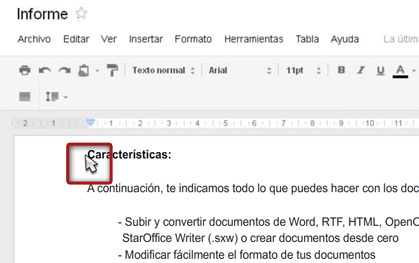
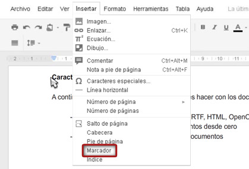
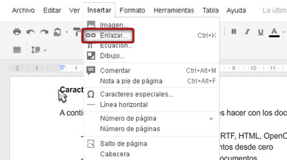
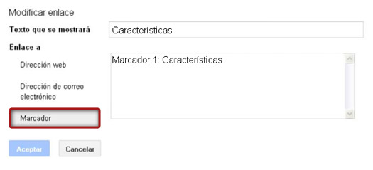
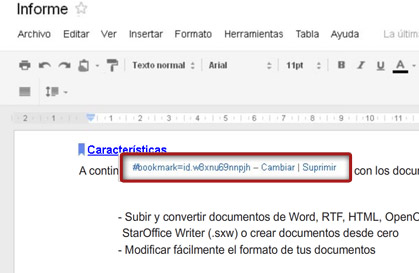

Los marcadores son accesos directos a ubicaciones concretas de un documento. Pueden resultar muy útiles para realizar una tabla de contenido o si queremos pasar de una parte a otra de un documento largo sin desplazarnos por él.
Para crear un marcador pincharemos en el lugar donde queramos colocar el marcador en el documento.

Luego pincharemos en el menú desplegable Insertar y seleccionaremos Marcador.

Un marcador sólo es útil si se le puede asociar un enlace. Para crear un enlace a un marcador seleccionaremos el texto al que queramos enlazarlo. Pincharemos en el menú desplegable Insertar y seleccionaremos Enlazar... o pincharemos en el icono del enlace en la barra de herramientas.

En la ventana "Modificar enlace", seleccionamos la opción "Marcador" para ver los marcadores creados. Haremos clic en el marcador que deseemos enlazar y aceptamos.

Para modificar o eliminar el enlace, haremos clic en él para que aparezca la ventana "Ir a enlace". En esta ventana, veremos el marcador con el que estamos enlazando y los enlaces Cambiar y Suprimir.
